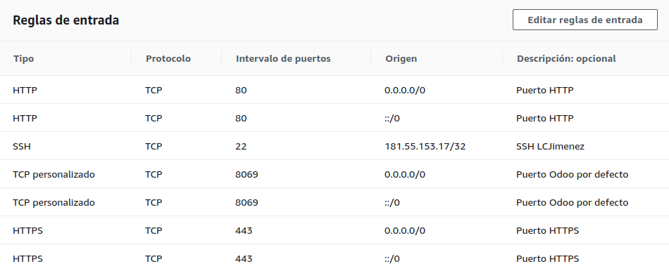
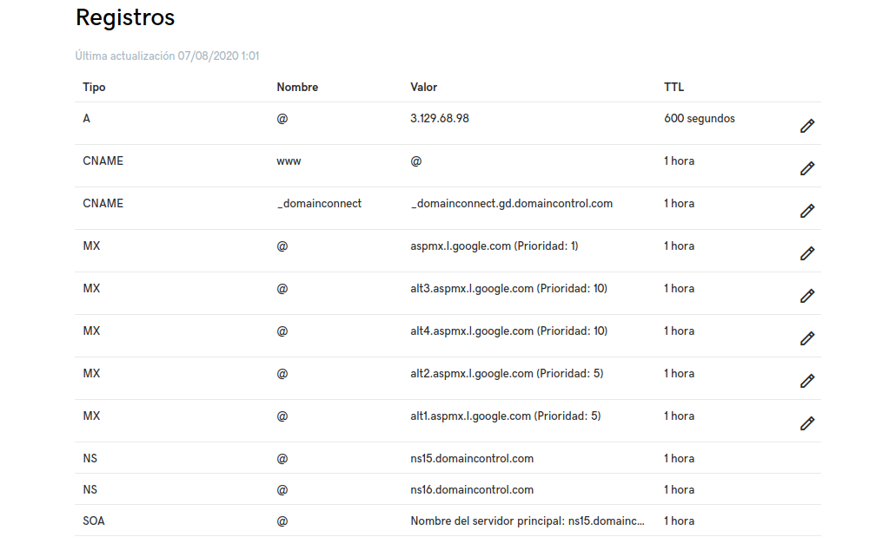
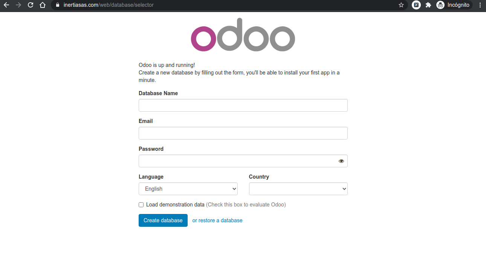

Instalación de Odoo 10 en AWS Ubuntu 16.041 Prerrequisitos1.1 Amazon Web Service1.1.1 Crear y activar una cuenta AWS1.1.1.1 Crear cuenta1.1.1.2 Agregar un método de pago1.1.1.3 Verificar tu número de teléfono1.1.1.4 Referencias y enlaces1.1.2 Lanzar servidor AWS EC2 con Ubuntu 16.041.1.2.1 Grupos de seguridad1.1.3 Conexión a la instancia1.2 Dominio2 Instalación2.1 Ingresar, actualizar y cerrar2.1.1 Abrir la conexión con la instancia2.1.2 Actualizar el sistema2.1.3 Cerrar la conexión con la instancia2.2 Agregar el repositorio de paquetes de Odoo2.3 Instalación PostgreSQL 9.5 en Ubuntu 16.042.4 Instalar Odoo2.5 Instale Nginx para facilitar el acceso del usuario2.6 Certificado SSL con Let’s Encrypt2.6.1 Instalación de Let’s Encrypt2.7 Resultado de la instalación3 Ajustes3.1 Configurar Odoo4 Contructor de sitios web4.1 Instalación del módulo
https://www.youtube.com/watch?v=VdXQTcetr6o
Recibirá un correo electrónico para confirmar que se creó su cuenta. Puede iniciar sesión en su nueva cuenta con la dirección de correo electrónico y la contraseña con las que se registró. Sin embargo, no puede utilizar los servicios de AWS hasta que termine de activar su cuenta.
En la página Información de pago, ingrese la información sobre su método de pago y luego elija Verificar y agregar.
Nota: Si desea utilizar una dirección de facturación diferente para su información de facturación de AWS, elija Usar una nueva dirección antes de elegir Verificar y agregar.
Importante: no puede continuar con el proceso de registro hasta que agregue un método de pago válido.
https://mobisoftinfotech.com/resources/mguide/launch-aws-ec2-server-set-ubuntu-16-04/

Información de la instancia
Conexión a la instancia de Linux mediante un cliente SSH
ssh -i /path/my-key-pair.pem my-instance-user-name@my-instance-public-dns-name
Ejemplo
xxxxxxxxxxsudo ssh -i /home/luisca1985/Documentos/Inertia/aws_server/key_pair/inertiasas_aws_key_pair.pem ubuntu@ec2-3-129-68-98.us-east-2.compute.amazonaws.com
https://www.palbin.com/knowledge-base/como-configurar-mi-dominio-en-godaddy/
https://co.godaddy.com/help/configuracion-de-dns-para-tu-dominio-de-cpanel-8852

https://www.vultr.com/docs/installing-odoo-10-community-on-ubuntu-16-04
xxxxxxxxxxssh -i /path/my-key-pair.pem my-instance-user-name@my-instance-public-dns-name
Antes de instalar cualquier paquete en su instancia de Ubuntu, inicie sesión con el usuario sudo y actualice.
xxxxxxxxxxsudo apt-get updatesudo apt-get upgrade
xxxxxxxxxxsudo reboot
Una vez que el sistema se haya reiniciado, inicie sesión nuevamente como usuario sudo y continúe con los siguientes pasos.
Ejecute los siguientes comandos como root:
xxxxxxxxxxsudo su
xxxxxxxxxxwget -O - https://nightly.odoo.com/odoo.key | apt-key add -echo "deb http://nightly.odoo.com/10.0/nightly/deb/ ./" >> /etc/apt/sources.list.d/odoo.listapt-get update
https://www.calhoun.io/how-to-install-postgresql-9-5-on-ubuntu-16-04/
xxxxxxxxxxsudo apt-get updatesudo apt-get install postgresql postgresql-contrib
xxxxxxxxxxsudo systemctl start postgresqlsudo systemctl enable postgresql
xxxxxxxxxxsudo systemctl status odoo
Se crea un usuario PostgreSQL con los siguientes comandos:
xxxxxxxxxxsudo su - postgrescreateuser odoo -U postgres -dRSP
Cuando se le solicite, establezca una contraseña segura para el usuario de la base de datos y guárdela en un lugar seguro.
xxxxxxxxxxexit
xxxxxxxxxxsudo apt-get install odoo
Inicie Odoo y configúrelo para que se inicie automáticamente cuando se inicie el sistema.
xxxxxxxxxxsudo systemctl start odoosudo systemctl enable odoo
https://www.youtube.com/watch?v=7bHSUCKt3SE
Puede redirigir el tráfico en el puerto HTTP predeterminado (80) y el puerto HTTPS predeterminado (443) a Odoo (que se ejecuta en el puerto 8069) para que los usuarios ya no tengan que agregar el número de puerto 8069 cada vez que acceden al sistema.
xxxxxxxxxxsudo apt-get install nginx
Edite el archivo de configuración del sitio Nginx utilizando un editor de texto, como nano.
xxxxxxxxxxsudo su
xxxxxxxxxxnano /etc/nginx/sites-available/default
Encuentra las siguientes líneas.
xxxxxxxxxxlocation / {# First attempt to serve request as file, then# as directory, then fall back to displaying a 404.try_files $uri $uri/ =404;}
Y cambialo por los siguiente:
x#location / {# First attempt to serve request as file, then# as directory, then fall back to displaying a 404.# try_files $uri $uri/ =404;#}# PORT 8069 to PORT 80location / {proxy_pass http://localhost:8069;proxy_http_version 1.1;proxy_set_header Upgrade $http_upgrade;proxy_set_header Connection 'upgrade';proxy_set_header Host $host;proxy_cache_bypass $http_upgrade;}
Reinicie Nginx y configúrelo para que se inicie automáticamente cuando se inicie el sistema.
xxxxxxxxxxsystemctl restart nginxsystemctl start nginx
Ahora puede visitar el sistema Odoo desde el puerto 8069 y el puerto 80.
xxxxxxxxxxhttp://[your-vultr-instance-IP]:8069http://[your-vultr-instance-IP]
https://clouding.io/hc/es/articles/360010373220-Configurar-SSL-en-la-imagen-de-Odoo
https://www.youtube.com/watch?v=7bHSUCKt3SE
Agregamos el repositorio y los actualizamos:
xxxxxxxxxxsudo suadd-apt-repository ppa:certbot/certbotapt-get update
Y luego lo instalamos:
xxxxxxxxxxapt install python-certbot-nginx
Ajustamos el archico Nginx
xxxxxxxxxxnano /etc/nginx/sites-available/default
en server_name se incluye el dominio
xxxxxxxxxxserver_name inertiasas.com www.inertiasas.com;
Guardamos y reiniciamos el servicio Nginx:
xxxxxxxxxxsystemctl restart nginx
Activamos el firewall ufw:
xxxxxxxxxxufw allow 'Nginx Full'ufw allow 'OpenSSH'ufw enable
Verificamos el estado de ufw:
xxxxxxxxxxufw status
Lo cual debe retornar
xxxxxxxxxxTo Action From-- ------ ----Nginx Full ALLOW AnywhereOpenSSH ALLOW AnywhereNginx Full (v6) ALLOW Anywhere (v6)OpenSSH (v6) ALLOW Anywhere (v6)
Generamos el certificado:
xxxxxxxxxxcertbot --nginx -d inertiasas.com -d www.inertiasas.com
Las respuestas son las siguientes
xxxxxxxxxxPlugins selected: Authenticator nginx, Installer nginxEnter email address (used for urgent renewal and security notices) (Enter 'c' tocancel): luisca1985@gmail.com
xxxxxxxxxx- - - - - - - - - - - - - - - - - - - - - - - - - - - - - - - - - - - - - - - -Please read the Terms of Service athttps://letsencrypt.org/documents/LE-SA-v1.2-November-15-2017.pdf. You mustagree in order to register with the ACME server athttps://acme-v02.api.letsencrypt.org/directory- - - - - - - - - - - - - - - - - - - - - - - - - - - - - - - - - - - - - - - -(A)gree/(C)ancel: A
xxxxxxxxxx- - - - - - - - - - - - - - - - - - - - - - - - - - - - - - - - - - - - - - - -Would you be willing to share your email address with the Electronic FrontierFoundation, a founding partner of the Let's Encrypt project and the non-profitorganization that develops Certbot? We'd like to send you email about our workencrypting the web, EFF news, campaigns, and ways to support digital freedom.- - - - - - - - - - - - - - - - - - - - - - - - - - - - - - - - - - - - - - - -(Y)es/(N)o: N
xxxxxxxxxxPlease choose whether or not to redirect HTTP traffic to HTTPS, removing HTTP access.- - - - - - - - - - - - - - - - - - - - - - - - - - - - - - - - - - - - - - - -1: No redirect - Make no further changes to the webserver configuration.2: Redirect - Make all requests redirect to secure HTTPS access. Choose this fornew sites, or if you're confident your site works on HTTPS. You can undo thischange by editing your web server's configuration.- - - - - - - - - - - - - - - - - - - - - - - - - - - - - - - - - - - - - - - -Select the appropriate number [1-2] then [enter] (press 'c' to cancel): 2
El mensaje final es:
xxxxxxxxxxIMPORTANT NOTES:- Congratulations! Your certificate and chain have been saved at:/etc/letsencrypt/live/inertiasas.com/fullchain.pemYour key file has been saved at:/etc/letsencrypt/live/inertiasas.com/privkey.pemYour cert will expire on 2020-11-05. To obtain a new or tweakedversion of this certificate in the future, simply run certbot againwith the "certonly" option. To non-interactively renew *all* ofyour certificates, run "certbot renew"- Your account credentials have been saved in your Certbotconfiguration directory at /etc/letsencrypt. You should make asecure backup of this folder now. This configuration directory willalso contain certificates and private keys obtained by Certbot somaking regular backups of this folder is ideal.- If you like Certbot, please consider supporting our work by:Donating to ISRG / Let's Encrypt: https://letsencrypt.org/donateDonating to EFF: https://eff.org/donate-le

Ahora puede acceder a Odoo usando su navegador.
xxxxxxxxxxhttps://[your-vultr-instance-IP]
Elija un nombre para la base de datos que creará Odoo, ingrese su dirección de correo electrónico y elija una contraseña para el usuario admin. continúe haciendo clic en el botón Create database.
Una vez que se haya configurado la base de datos, accederá a la interfaz de usuario de Odoo, donde puede personalizar su sistema Odoo instalando aplicaciones.
https://www.youtube.com/watch?v=XxgRcFRqcAE
Configuración -> Usuarios -> Compañias
Administración del sitio web -> Configuración
Nombre del sitio
Idioma
Favicon
Medios sociales
Sitio web -> Personalizar -> Editor HTML -> ID plantilla: website.layout_footer_copyright
Curso interno de Odoo. Módulo del Sitio web